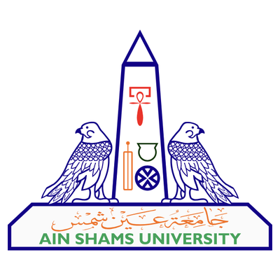
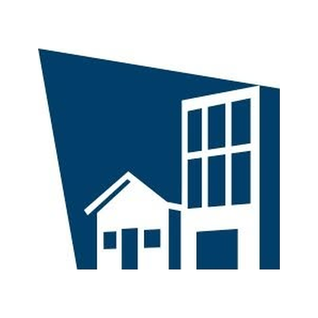
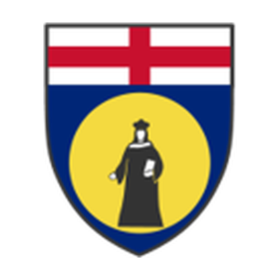

Bio
Where I am now, how I got here — what an exciting journey so far…
I am a Wind Engineer at CPP Wind Engineering Consultants and a Postdoctoral Associate at the NSF NHERI Wall of Wind Experimental Facility at Florida International University (FIU). My research examines how extreme, non-stationary winds, such as thunderstorm downbursts, derechos, tornadoes, and hurricanes, interact with buildings and infrastructure, combining full-scale field measurements, large-scale experiments, and fluid–structure interaction analysis.
I earned my Ph.D. in Civil and Environmental Engineering at FIU in 2026 under Dr. Amal Elawady. As a visiting Ph.D. scholar at the University of Genoa, I worked with the wind science group of Prof. Giovanni Solari under the supervision of Prof. Maria Pia Repetto and Dr. Massimiliano Burlando on full-scale field measurements of thunderstorm winds, and as a Wind-Driven Rain Fellow at the Insurance Institute for Business & Home Safety (IBHS), I saw how research turns into mitigation practice for extreme wind hazards.
Before my Ph.D., I spent eight years designing and assessing special steel structures in Egypt and Qatar. That practical grounding still shapes how I approach research: the goal is always guidance that engineers can use to build a safer built environment.
Right NowCurrent roles

CPP Wind Engineering Consultants, Windsor, CO

NSF NHERI Wall of Wind Experimental Facility, Florida International University, Miami, FL
What I ChaseResearch & teaching interests
Research
Downburst-like outflowsNon-synoptic windsTornado-induced loadsAtmospheric boundary layer windsTime–frequency scalingContinuous wavelet transformFull-scale field measurementsAeroelastic testingAerodynamic testingPower infrastructure
Teaching
Structural AnalysisSteel DesignEngineering Mechanics of MaterialsWind EngineeringNon-stationary Winds
Where I TrainedAcademic background
- 2022 – 2026Ph.D., Civil and Environmental Engineering (Structural and Wind Engineering), Florida International University
Advisor: Dr. Amal Elawady - 2025M.S., Civil and Environmental Engineering (Structural and Wind Engineering), Florida International University

2015 – 2020M.S., Civil Engineering (Structural Engineering), Ain Shams University, Cairo, Egypt
Thesis: Lateral torsional buckling strength of partial corrugated-web steel beams- 2009 – 2014B.S., Civil Engineering, Ain Shams University, Cairo, Egypt
The Road So FarCareer path
- August 2026 – PresentWind Engineer, CPP Wind Engineering Consultants, Windsor, CO
- August 2026 – PresentPostdoctoral Associate, Wall of Wind Experimental Facility, Florida International University

May 2025 – August 2025Wind-Driven Rain Fellow, Insurance Institute for Business & Home Safety (IBHS), SC
August 2023 – January 2024Visiting Ph.D. Researcher, University of Genoa, Italy- August 2022 – May 2026Graduate Research Assistant, Dept. of Civil and Environmental Engineering, FIU
- July 2014 – August 2022Steel Structure Design Engineer / Consultant, Cairo, Egypt and Doha, Qatar
Wind in My SailsHonors & fellowships
- 2026SEI Futures Fund Student Scholarship to participate in the 2026 Structures Congress in Boston, Structural Engineering Institute
- 2025National Science Foundation Travel Award to the NHERI Summer Institute for Early-Career Faculty at the University of Texas at San Antonio, National Science Foundation
- 2025Wind-Driven Rain Fellowship, Insurance Institute for Business & Home Safety (IBHS)
Paying It ForwardInstruction & mentorship
- 2022 – 2026Teaching Assistant, FIU — Structural Analysis (CES 3100), Steel Design (CES 4605), Engineering Mechanics of Materials (EGM 3520)
- 2024 – 2026Team lead, graduate student group for the NICHE Wind-Only Physical Design Testbed, FIU
- 2023International Peer Mentor, International Student and Scholar Services, FIU
My ToolboxExpertise
Experimental: aeroelastic/aerodynamic model design and testing, large-scale wind tunnel testing, 3D Particle Image Velocimetry, field data analysis.
Analysis: time–frequency (wavelet) analysis, proper orthogonal decomposition, extreme value statistics, structural dynamics.
Programming and tools: MATLAB, Python, R, SQL, ArcGIS.
Giving BackPeer review & community
- 2026 – presentVolunteer, Structural Engineers Association of Colorado (SEAC)
- 2025 – presentReviewer, Journal of Building Engineering
- 2025 – presentReviewer, Physics of Fluids
- 2025 – presentReviewer, Journal of Architectural Engineering, ASCE
- 2025 – presentReviewer, Springer Nature
- 2023 – 2026Treasurer, Chi Epsilon (Civil Engineering Honor Society), FIU Chapter
That's the CV version. For the person behind the papers, head over to Identity or to Off the Clock…